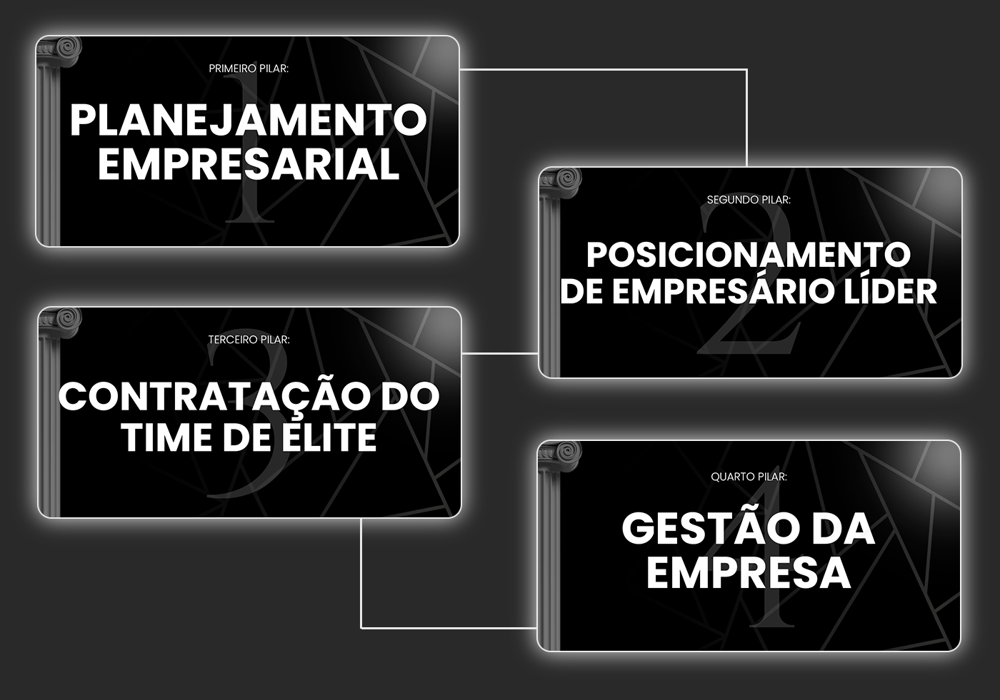
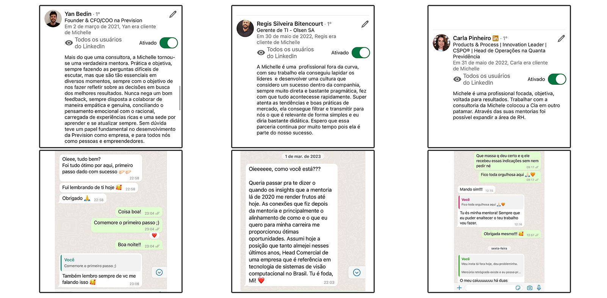

O Método RH SEM MIMIMI
Para continuar crescendo sua empresa, você precisa de um time que dê conta do recado.
Ficar apagando incêndio, corrigindo comportamento e tendo falta de confiança na equipe para tocarem a empresa, é única e exclusivamente culpa do processo em que você gere o RH.
Por isso, meu papel é montar um RH à prova de falhas para você, onde configuramos tudo uma única vez e o resto vai funcionar de forma automática:
QUEM CONFIA NO MEU MÉTODO, APROVA
MUITO PRAZER, ME CHAMO MICHELLE

MUITO PRAZER, ME CHAMO MICHELLE
Apaixonada pela história das pessoas, por Harley Davidson, dança e culinária, Michelle é empresária e fundadora da Consultoria Contato e defende a ideia de RH SEM MIMIMI. Tem criado conteúdos de gestão ágil, mostrando o que é ser e fazer RH de forma eficaz, rápida e direta, sem mimimi.
É Psicóloga, formada pela Universidade Federal de SC.
Possui 3 pós graduações e diversos cursos e certificações internacionais, mas acredita que o que a tornou a profissional que é hoje foram as experiências e as pessoas que tem ao redor. Para ela, empreender é uma série de ações orgânicas, naturais e apaixonantes.
Atua há mais de 19 anos na área de gestão de pessoas.
PARA QUEM É?
Você precisa ter no mínimo 10 funcionários
Empresário que deseja sair do operacional e ver um time gerenciado de forma autônoma
Empresário que deseja continuar crescendo, com equipe em que possa confiar
Empresário que deseja contratar pessoas qualificadas para a equipe e nunca mais se preocupar com os talentos
Empresário que deseja ter o papel de líder estratégico e parar de perder tempo (re)fazendo trabalho da equipe
Empresário que deseja crescer exponencialmente ainda em 2024, eliminando qualquer tipo de problema com o time ou a empresa.
Empresário que deseja sair do operacional e ver um time gerenciado de forma autônoma
Após a implementação, prepare-se para:
Ser mais respeitado
Ter o controle da sua empresa
Automatizar seu tempo e ver tudo funcionando
Receber (muito bem) para ser estratégico e menos operacional
Gerar uma empresa com receita recorrente e se tornar referência